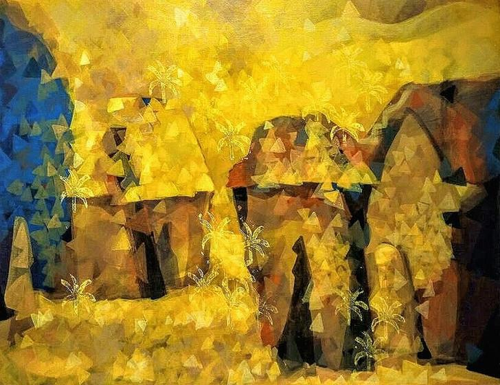
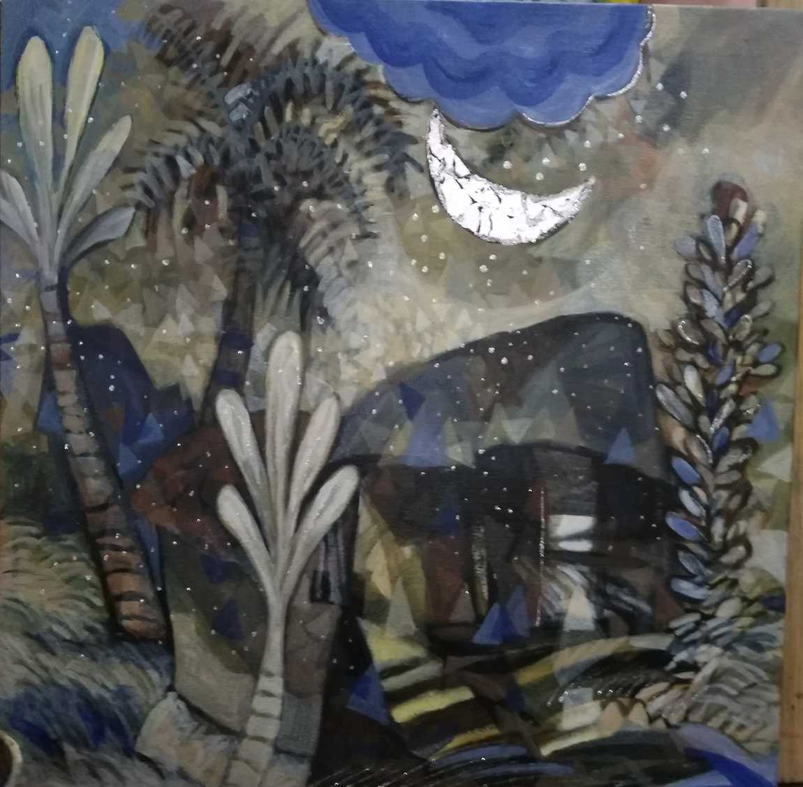
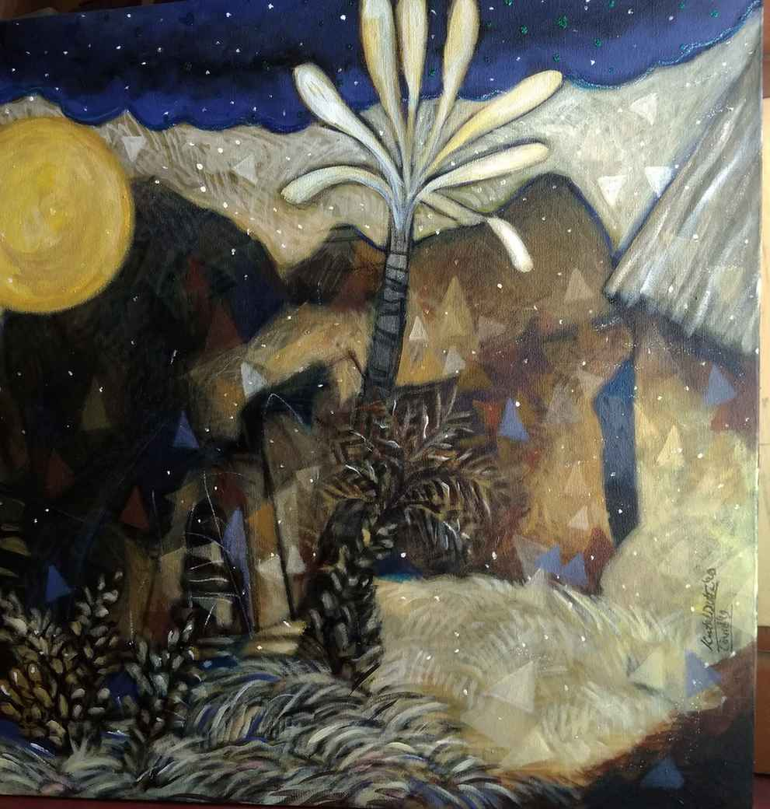
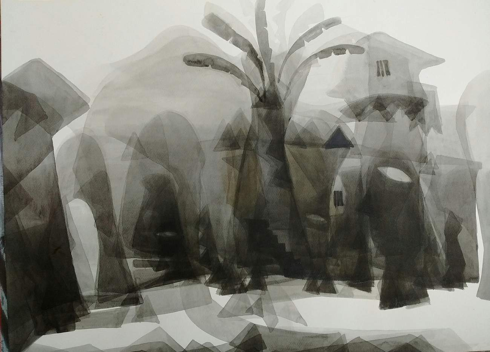
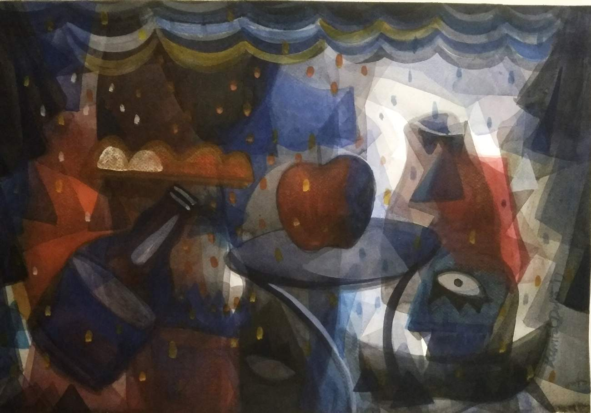
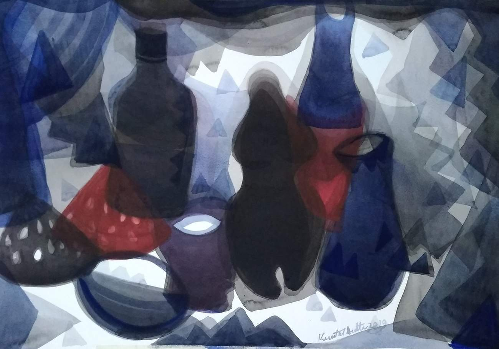
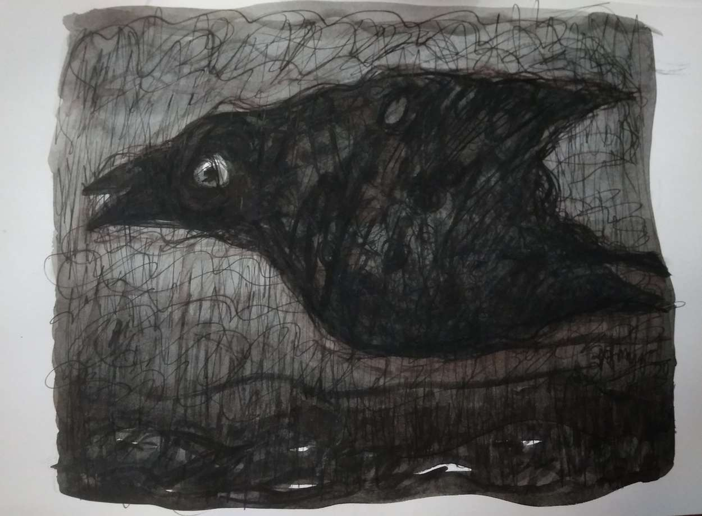
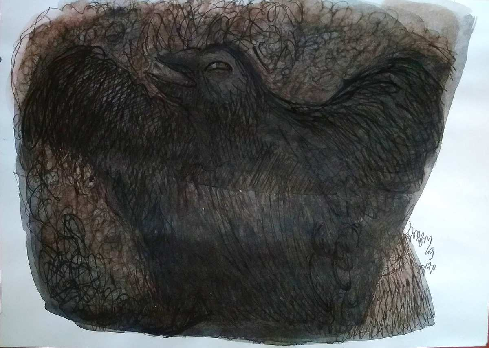

Spotlight
Kuntal Dutta
The compositions of Kuntal Dutta have an air of magical realism. His sources of inspiration are real
life things that one would observe every day. He draws houses that are part of a town, a tree, a bird
or the moon which is a source of admiration for everyone. Yet the way he portrays these simple objects
gives his canvas a magical quality as his brushstrokes are not precise rather they create a haziness
which instead of distorting the picture gives it a surreal quality. He uses muted colours to paint this
dream like world where everything looks merged together yet everything creates its own
separate impression. He has a knack for giving a magical quality to the commonplace while making
the magical a part of everyday life. In his artistic gaze the magical and the real merge to create a
tangible symphony. .
TOWN 6

TOWN 6, Kuntal Dutta
Medium - Acrylic on Canvas
Dimensions - 36" X 48"
This painting depicts a dwelling of a few houses by a river or a sea. The landscape
is presented as a blur of yellow but one can still make out the outlines of the
houses and the inhabitants living there. Towards the left is a dark blue blur which
gives us the impression of a presence of a water body. On the background are faint
hills which are curved with no jarring and sharp edges. The wind and water
perhaps have eroded these edges over the years which indicate how ancient this
landscape is. While these are commonplace aspects that we are all familiar with
the one element that catches the eye of the viewer is the tiny triangles which
create an effect of sparkle on the canvas. These tiny triangles are accompanied by
star-like structures which add to this shine. The use of the colour yellow
heightens this illusory quality by creating a sense of glow and warmth. Together
this creates a magical space of illusion where reality disappears in the blur of the
artist's brushstrokes.
TOWN 9

TOWN 9 , Kuntal Dutta
Medium - Acrylic on Canvas
This painting draws a surreal picture of landscape and a moment caught in a
state of limbo. There is no clear demarcation of where one house begins and
where it ends as they seem to part of the earth. The trees encircle this space
almost in a gesture of protection. On the sky the cloud is imagined in a way a
child traces the clouds in a manifestation of innocence while the moon looks to
be made up of several pieces all put together in a moment of neat harmony. The
paths, stairs and even the grass all merge into the landscape. The use of shades of
grey and blue give it an air of serenity and balance. Together this paining evokes
an image of an oasis in a desert. Here is a creation of an oasis of peace and
tranquility which has remained untouched by the hustle and bustle of the world
outside. Yet there falls from the sky snow like flecks of white giving this
painting a magical quality. In midst of an oasis in a desert, snow falls and along
with it the dichotomy between real and magical collapse into nothingness and
all that exist is symphony and beauty.
TOWN WITH FULL MOON

TOWN WITH FULL MOON , Kuntal Dutta
Medium - Acrylic on canvas
This painting depicts a small dwelling with a few trees and plants set against the backdrop
of a hilly landscape. The house has lost its structure as it becomes one with the landscape.
The hills in the background stand tall surrounding the dwelling. The tree stand luminous
and the ferns and the plants at the foothills are swaying which gives the painting a sense
of movement. The grass is drawn in well defined brushstrokes evoking a presence of a
gentle wind. But it is the moon and the sky that catches the attention of the viewers.
Unlike the rest of the canvas which is painted in subdued colours, the sky is painted a
vivid blue which captures the beauty and mystery of the vastness at night. The full moon
shines its ethereal light coming so close to humans that it almost seems to be part of the
landscape rather than the sky. The moon draws the attention of the viewers as it is not
painted white, the usual colour we would associate with it. Instead it has been given a
golden hue which gives it a surreal quality. Together, this canvas presents a magical space
and is a celebration of the nightscape.
TOWN IN BLACK LIGHT

TOWN IN BLACK LIGHT , Kuntal Dutta
Medium - Water colour
Dimensions - 20" X 30"
This grayscale painting depicts a town with houses and a tree in its midst.
Some of the houses are single storied whereas some give the impression of
being double storied. We can make out pathways and stairs in this town and
some vague occupants. The lack of bright colours creates an atmosphere of
monotony and dreariness. Yet the use of grey, black and white emphasizes
this faded landscape. Everything seems to overlap in this canvas as it gets
difficult to separate the outlines of each object drawn by the artist. The artist
invites his viewers to take a closer look as the house merge with what look
like human faces. There is strangeness to both the houses and the faces
which both lack any form of life. If the houses give an impression of lacking
hearth than the faces look like they have forgotten the existence of their
heart. Perhaps this painting calls to attention the muted existence of both
humans and houses who are trapped in a daily grind in search of colours.
STILL LIFE WITH AN APPLE

STILL LIFE WITH AN APPLE , Kuntal Dutta
Medium - Water colour
Dimensions - 10" X 15"
An apple lies at the center of a table being gazed by a man, a half
empty bottle lies at the other side. The background depicts a stage
with its curtains drawn open. There is faint glow of light as a
viewer is given a slice of a cityscape. With the use of layers and
dark and lighter colours, the artist creates a play of light as some
objects are revealed under the spotlight while some give an air of
mystery in darkness. There are no neat lines as things merge into
each other and yet emerge from within these layers. But it is a
single eye that looks on which recalls the all seeing eye of myths
and fairy tales. the senses are stirred up in this canvas as we can
imagine the hustle and bustle of this space with the bottle tipping
over in some celebration or drowning in some sorrow. The faces
blur in the background giving this painting an air of
disjointedness. But it the ordinary apple which looks out of place
in this mysterious surrounding. Yet it is this apple which is a
symbol of temptation and seduction. Hence, it is the commonplace
which manifests into the enticement of the cityscape.
STILL LIEF 2

STILL LIEF 2 , Kuntal Dutta
Medium - Water colour
Dimensions - 10" X 15"
There is a sense of austerity in this painting as the artist uses
minimal and unadorned pieces as the object of his interest. The use
of grey, black and blue create a dream like motif where the real
can no longer be separated from the unreal. Like in a dream where
if one reached out to hold something, it would disappear, the
objects in this painting look intangible. There is a randomness to
the way things are presented in this canvas but at the same time
they look like pieces of puzzle waiting to be put together to form a
larger narrative. Each object has made a singular journey and
together they celebrate the joy of diversity. One can no longer
make out the structure of these objects as they have lost their
rigidity. Is it a bottle or a flower vase, a tea cup or even a slice of
fruit? No can make out. This painting reflects transience of
everything, be it grand narratives or the little things. Nothing can
escape the onslaught of time as everything fades into nothingness
even memories.
BIRD DRAWING

BIRD DRAWING , Kuntal Dutta
Medium - Ink on Paper
A black bird lies at the center of the painting evoking a sense of foreboding. There
is an element of mystery and darkness of a bird caught in mid flight. It looks like
the bird is battling a storm and it is flying across a turbulent sea. The play of white
and black at the bottom half of the canvas reflect a presence of water as the lines
drawn across capture the movement of this tempest. The artist has filled the
painting with haphazard lines which can be symbolic of the turbulent mind as
well. In this moment of thunderstorm, this bird has no hope for a respite. There
are no trees in the picture or even a stone to rest its weary wings. Instead it is
exposed to the harsh elements with no protection. Yet what is fascinating is that in
spite of all the odds against it, the bird is still in mid flight, it is not painted in a
moment of defeat. There is a sense of joy in all the shades of darkness in this
picture especially the light of the eye that the artist has captured. Truly, the bird
will ride this storm.
BIRD DRAWING 2

BIRD DRAWING 2 , Kuntal Dutta
Medium - Ink on Paper
A bird is caught, a bird that is meant to be free. The multiple lines
across the painting give an impression of a snare that has been successful in
entrapping this bird. The bird looks on in fright as the artist captures the fear and
turmoil of this creature. The use of black emphasizes this fear and violence that
one can perceive in this picture. This is further emphasized by the random lines
which hint at a larger chaos. There is disorder and chaos in this picture which is
hard to miss. But black is also a colour of mourning and loss which indicates the
story that can be imagined. Violence often gives way to loss as that is the way of
life. But black is also a symbol of protest. Here, this bird is caught and trapped but
is still spreading its wings even in this claustrophobic space. This evokes an image
of a phoenix rising, for it is only when everything burns down to ashes that a new
phoenix can be born. Hence, myth and reality combine in this narrative to retell a
story of oppression as well as hope.